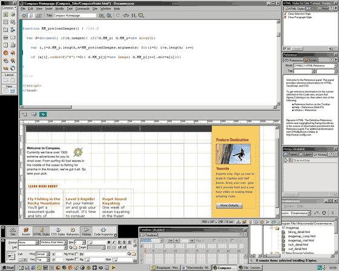

Тимофей Непомнящий
руководитель раздела Macromedia Director в российской Группе пользователей
продуктов Macromedia
http://www.rmmug.ru, timofey@gorod.ru
Мир сетевых технологий набирает обороты. Интернет из средства почтовой связи давно превратился в уникальное средство массовой информации. Все больше известных и не столь известных компаний открывают свои представительства в сети, и сегодня это уже не просто странички с прайс-листом, перечнем услуг и координатами фирмы, а профессионально выполненные сайты, насыщенные анимацией, трехмерной графикой, сложными системами обработки информации. Один за другим открываются развлекательные Интернет-порталы, а Интернет-магазины становятся нормой во всех отраслях торговли.
В процессе этого развития среди разнообразия технологий Web-разработки появляются явно выраженные лидеры. Безусловно, первое место в предпочтениях разработчиков занимают Sun (http://www.sun.com) с языком Java и Microsoft (http://www.microsoft.com) с решениями DirectX и ASP. Ко второму кругу элиты разработчиков Web-технологий принадлежат Allaire (http://www.allaire.com) c ее ColdFusion и компания Macromedia (http://www.macromedia.com) с целым рядом технологий
Еще до появления всеобщего интереса к Web-технологиям компания Macromedia была известна на рынке инструментов для создания мультимедийных приложений и обработки графики. Ее пакеты Director и Authorware не имели да и сейчас не имеют аналогов. С повсеместным распространением World Wide Web логично было перенести опыт Macromedia в мультимедийных технологиях в Интернет, что и осуществилось с разработкой технологий Flash и Shockwave. Появление Macromedia Flash без преувеличения вызвало революцию в разработке Интернет-сайтов, поскольку такой "легкой" (по объему создаваемых файлов) и удобной программы для создания анимации еще не было. В 1997 г. на смену текстовым редакторам и не очень удачным попыткам некоторых фирм создать редактор HTML, где можно было бы одновременно и редактировать код, и видеть результат, Macromedia выпускает редактор Dreamweaver. И, наконец, в 2000 г. появляется Dreamweaver UltraDev - визуальное средство проектирования сложных сайтов с использованием сетевых серверных приложений ASP, JSP, CFML и баз данных.
Рассмотрим более подробно возможности приложений Macromedia, с помощью которых сетевые разработчики разного уровня и направлений могут создавать эффективные, красивые и мощные системы.
Инструменты Macromedia
Dreamweaver 4
Впервые вышедшая в 1997 г. программа стремительно завоевала популярность среди разработчиков Web-сайтов. За три года выпущено четыре версии этого программного продукта (в конце ноября 2000 г. объявлено о начале продаж Macromedia Dreamweaver 4 Firework 4 Studio), и на сегодняшний день это, пожалуй, самое удобное решение для разработчиков Web-страниц. Окно программы показано на рис. 1. Редактируя HTML-код создаваемой страницы, пользователь имеет возможность сразу видеть изменения на ней. И наоборот, если пользователь вставляет графику и рисует таблицы в окне отображения графики, программа сама вставляет нужные теги, но не добавляя ничего лишнего. Пользуясь этой программой, можно существенно ускорить работу над Web-сайтом и HTML-страницами. Удобно и опубликовать созданный сайт или страничку, используя встроенный менеджер сайта. Последняя версия позволяет даже встраивать Flash-текст и Flash-кнопки, не используя пакет Macromedia Flash. Интуитивный интерфейс пользователя (Macromedia User Interface, или MUI) напоминает сильно усовершенствованный интерфейс продуктов фирмы Adobe и очень удобен. Достаточно просто щелкнуть мышью любой объект или строку кода, чтобы просмотреть свойства выделенного объекта, не вызывая дополнительных окон. Программа содержит большое количество встроенных скриптов для обработки событий (загрузка страницы, нажатие мыши и т.п.), да и писать скрипты вручную удобно - выравнивание строк и подцветка синтаксиса делаются автоматически, а уж о необходимости такой вещи, как отладчик JavaScript, и говорить не приходится. Dreamweaver тесно интегрирован с Fireworks, что позволяет запускать редактор графики одним щелчком мыши; при этом вся страница, не потеряв ни строки кода, окажется в Fireworks, а затем, по окончании правок, вернется обратно.
|  |
| Рис. 1. Окно программы Dreamweather 4.
|
Dreamweaver UltraDev 4
Первая версия этой программы увидела свет недавно, летом 2000 г. При создании UltraDev 4 Macromedia просто "скрестила" два своих пакета - Dreamweaver и Drumbeat, чтобы создать систему разработки Web-сайтов, широко использующих такие технологии обращения к базам данных, как ASP, JSP и CFML.
Выпущенный в ноябре 2000 г. набор Macromedia Dreamweaver UltraDev 4 (Macromedia пропустила номера версий 2 и 3 для синхронизации с Dreamweaver) включает и большинство новых возможностей Dreamweaver 4, а кроме них, предлагает серьезный инструментарий для использования серверных технологий ASP, JSP и технологии ColdFusion. В результате разработчик с одинаковой легкостью оперирует кодом страницы и элементами ее дизайна, создает собственные библиотеки серверных скриптов или использует встроенные; может создавать свой сайт, просто перетаскивая ячейки из базы данных в нужное место на странице, быстро присоединять статическое содержание Web-страниц к любой базе данных и даже видеть, как это все работает, не загружая созданный сайт на сервер. Короче говоря, Macromedia Dreamweaver UltraDev (рис. 2) в полной мере можно назвать высокопрофессиональной системой разработки сложных сетевых приложений.
| Рис. 2. Окно программы Dreamweather UltraDev 4.
|
Flash 5
Видано ли, чтобы минутная анимированная заставка со звуком и безупречной графикой занимала по объему 50-100 Кбайт (это размер среднего качества картинки формата JPG)? Именно малый размер файла позволил Macromedia Flash стать наиболее распространенной технологией создания анимированных элементов Web-сайтов.Сначала plug-in для просмотра Flash-анимации появился в составе браузера Netscape Navigator (еще тогда, когда Navigator использовали более половины пользователей Сети), а затем и Microsoft заключила договор с Macromedia о добавлении Flash в Internet Explorer. Flash 5 легально используют около полумиллиона разработчиков во всем мире, а по результатам исследования рынка, проведенного фирмой NPD Research, на декабрь 2000 г. 96,4% пользователей Интернета имеют возможность видеть преимущества векторной анимации в сети, используя предварительно установленный Flash player (т. е. им не нужно его специально загружать или устанавливать).
Вышедшая в августе прошлого года 5-я версия Macromedia Flash (рис. 3)снова поразила разработчиков. Помимо более удобного интерфейса (все того же MUI) и добавления средств для рисования и анимации, в пакете был радикально улучшен встроенный язык программирования ActionScript. Теперь для создания визуальных эффектов, игр, систем отображения информации практически нет ограничений. И свидетельство тому - бурный рост числа сайтов, где Flash используется для создания заставок и интерфейсов. Даже корпоративные интранет-порталы - новые и перспективные системы для работы внутри крупных и средних компаний - на первый взгляд, строгие и официальные, с успехом используют Flash как средство визуализации графиков, схем и алгоритмов. Происходит это по той простой причине, что создание такого их отображения, невозможное простыми средствами HTML, несравнимо по трудозатратам с созданием аналогичных интерфейсов, скажем, на Java.
 |
| Рис. 3. Окно Flash 5.
|
С новой версией языка ActionScript работа стала удобной и быстрой. Можно иметь дело непосредственно с XML и даже открывать XML-сокеты, можно проектировать многопользовательские игры и другие программы, связанные с серверными приложениями, можно даже создавать рекламу (на телевидении уже есть анимационные ролики, сделанные во Flash). Новая функция SmartClips представляет собой подобие библиотеки, в которой хранятся часто используемые блоки программирования ActionScript, причем эти блоки можно использовать повторно. Синтаксис самого ActionScript сильно изменен по сравнению с предыдущими версиями, но профессионалам не придется тратить много времени на адаптацию; к тому же существует возможность как писать все "руками", так и выбирать нужные команды из полного списка. Macromedia Flash теперь гораздо сильнее интегрирован с редактором Macromedia FreeHand; это достоинство, несомненно, оценят дизайнеры. Причем оба продукта будут доступны в одном пакете Macromedia Flash 5 FreeHand 9 Studio.
FreeHand 9
Ведущий свою историю с давних времен, от когда-то именитой фирмы Aldus, пакет Macromedia FreeHand (рис. 4) - одно из популярных приложений для создания векторной графики для печати, сети и для Flash. Уверенный конкурент CorelDraw и Adobe Illustrator, FreeHand предлагает более удобные и функциональные решения. Macromedia FreeHand 9 - хорошая программа для дизайнеров, как для печати, так и для сети, работает быстро и надежно и предлагает большой набор инструментов для обработки векторной графики. Поддерживается тут и новый MUI, и тесная интеграция со всей линейкой программ Macromedia, включая Flash.
| Рис. 4. Окно программы FreeHand 9.
|
Fireworks 4
Тяжеловесные универсальные графические пакеты, предназначенные для профессионального дизайна печатных изданий и мультимедиа-приложений, оказались не очень удобными для разработки сайтов. Нужна была программа, позволяющая легко и быстро создавать Web-графику и оптимизировать ее для просмотра в сети. В противовес дизайнерским "монстрам" Macromedia выпустила Fireworks. В ходе эволюции этой программы до версии 4 (рис. 5) создание и оптимизация графики, встраиваемой в сайт, стали не таким уж трудным делом, в том числе и для неискушенного пользователя. В Fireworks имеется полный комплект растровых и векторных инструментов для рисования и обработки изображений, созданные шедевры переводятся в нужные палитры и сжимаются с минимальной потерей качества, элементам дизайна придается интерактивность, графика легко экспортируется в Macromedia Dreamweaver и другие HTML-редакторы. Есть и возможность запускать редактирование графики Fireworks прямо из Dreamweaver или Flash.
| Рис. 5. Окно программы Fireworks.
|
Authorware 5.2
Одним из самых серьезных пакетов для производства мультимедийных обучающих приложений уже давно стал пакет Macromedia Authorware. Версия 5.2 этой программы - мультимедийное средство для создания обучающих и тестовых онлайн-приложений. Разработчики обучающих систем, учителя и специалисты в конкретных областях могут создавать четко продуманные технологичные системы обучения в любой области знаний, обеспечивать их доставку пользователям через Интернет, локальную сеть или на CD-ROM, и, конечно, контролировать результаты тренингов и экзаменов. Создаваемые программы легко наполняются текстовым, графическим, аудио- и видеосодержимым, удобны в управлении, обновлении и расширении.
Director 8 Shockwave Studio
Для создания более сложных интерактивных сетевых мультимедиа-приложений Macromedia приспособила свой прославленный пакет Macromedia Director. Одной из первых Macromedia встроила в свою среду разработки компрессию звука MP3. Разработчику стало не нужно даже задумываться о том, для чего предназначен проект - для CD или для Интернета. Достаточно запустить команду "Save as Shockwave", чтобы размер файла уменьшился в 7-10 раз и файл стал пригоден для показа в Сети. На сегодняшний день пакет Macromedia Shockwave Internet Studio 8, как когда-то Flash, становится стандартом в разработке презентационно-игровых систем для Интернета. С помощью встроенного языка Lingo можно неограниченно управлять сценарием, рисовать и создавать визуальные эффекты любой сложности, создавать многопользовательские игры под управлением Macromedia Shockwave Multiuser Server, встраивать в свою программу тот же самый Flash, потоковый звук и видео. Кроме того, к программе легко подключаются так называемые Xtra, или plug-in третьих фирм, которые позволяют разрабатывать 3D-игры и интерфейсы, микшировать звук, просматривать различные типы файлов, даже по умолчанию не предназначенные для просмотра через Сеть. Используя Director 8 Shockwave Studio (рис. 6), можно разрабатывать интереснейшие развлекательные Интернет-порталы и производительные мультимедийные программы.
| Рис. 6. Окно Director 8 Shockwave Studio.
|
Generator 2 Developer Edition, Enterprise Edition
Generator 2 - серверная программа для автоматизации обновления содержимого Web-сайтов и доставки пользователю динамического содержимого Web-страниц и графики. Generator 2 Enterprise Edition - масштабируемое решение для разработки индивидуализированных Web-сайтов с генерируемой в реальном времени графикой. Developer Edition - промышленное решение для автоматизации содержания Macromedia Flash.
Flash Player
Flash Player - программа просмотра анимационного наполнения Сети. На декабрь 2000 г., по оценке Macromedia, 311 млн. пользователей Интернета* могут применять Macromedia Flash Player для просмотра содержимого, созданного с помощью Macromedia Flash, профессионального стандарта для производства high-impact, векторных Web-анимаций. В настоящий момент Flash Player поставляется вместе со всеми наиболее распространенными браузерами, включая последние версии Netscape Navigator и Microsoft Internet Explorer.
*Эта оценка рассчитана из данных IDC об общем числе пользователей Интернета (323 млн. на декабрь 2000 г.) и данных NPD Research о доле тех, кто использует Flash Player. - Прим. ред.
Shockwave Player
Shockwave Player - программа просмотра развлекательных мультимедийных Интернет-приложений, созданных с помощью Director 8 Shockwave Studio. По данным Macromedia, более 165 млн. пользователей сети имеют на своих компьютерах Macromedia Shockwave Player и могут использовать соответствующие приложения, такие как мультимедиа-тренинги, демонстрации продуктов, торговые системы в Интернете, многопользовательские игры.
Aria 5.0
Программа для интерактивного анализа поведения клиентов и генерации отчетов в электронной коммерции. Macromedia Aria обеспечивает быстрый и точный мониторинг и анализ результатов сетевой активности.
LikeMinds
Macromedia LikeMinds дает возможность создать сайт, который будет взаимодействовать с каждым посетителем индивидуально, персонализируя содержимое сайта для каждого посетителя в реальном времени.
Вот основные программы, предлагаемые на сегодняшний день фирмой Macromedia для Web-разработчиков, - получается не так уж мало. Жаль, что еще несколько перспективных программ фирма больше не поддерживает. К примеру, это Macromedia Xres (обработка растровых изображений и создание дизайна печатного качества), Fontographer (программа для создания шрифтов), Actions (простые презентации корпоративного характера) и Extrime3D (трехмерная графика и анимация). Видимо, Macromedia, поняв, что всех денег не заработать, решила довольствоваться самым толстым на сегодняшний день куском компьютерного пирога под названием "Web-разработка". И, надо заметить, фирма удачно справляется с ним, отбирая у конкурентов проценты прибылей и продаж и устанавливая стандарты один за другим.
Стандарты 3D-графики
Трехмерность жизни вплотную подобралась и к компьютеру: многочисленные игры, мультфильмы, видеоролики уже стали привычными. В Сети все чаще появляются различные продукты, созданные с использованием 3D-технологий. В конце июля 2000 г. на Siggraph2000 Macromedia и Intel объявили о планах совместной разработки технологии отображения трехмерной графики и анимации через Интернет с помощью Shockwave Player. Эту инициативу поддержали (а по сути, участвуют в ней) практически все самые крупные мировые разработчики 3D-программ - Disсreet Logic (3D MAX), Autodesk, SoftImage, Lightwave, Alias|Wavefront (Maya)... и это лишь часть списка. По словам Джеймса Хазара (James Khazar), директора Macromedia по связям с разработчиками:
- создание трехмерного контента будет производиться в Macromedia Director, вероятно, версии 9, которая выйдет скорее всего в апреле-июле 2001 г.;
- будет поддерживаться импорт 3D-моделей из различных пакетов, вплоть до Maya;
- качество (текстура, сетка, заливка, частота кадров) будет масштабируемо, т.е. будет изменяться в зависимости от канала связи и мощности процессора пользователя;
- для получения приемлемого качества 3D-элементов достаточно будет канала с пропускной способностью 56 Кбит/с;
- основное позиционирование технологии - трехмерные многопользовательские игры.
Так как вы думаете - кто установит стандарт работы с трехмерной графикой в сети? Вопрос риторический - ответ уже ясен. Ждем Macromedia Director 9 (или 8.5), поддерживающий работу с трехмерной графикой (по слухам, технология носит кодовое имя TRON).
Есть и еще одна новость. Macromedia и Allaire приступили к созданию совместной системы под кодовым именем Harpoon, которая совместит в себе все программные решения ColdFusion и Jrun и изящество интерактивных изысков Macromedia Flash. Похоже, что на выходе мы получим нечто сенсационно-гениальное. По утверждению разработчиков, в программе появится возможность использовать основные элементы интерфейса для управления Web-приложениями на основе серверов Allaire ColdFusion и JRun. Harpoon тестировался и рецензировался на 2-й ежегодной Конференции разработчиков Allaire; ожидалось, что бесплатная бета-версия появится в декабре 2000 г. Система ставит своей целью сделать максимально простым и доступным создание качественного графического содержимого для Интернета в свете грядущей волны новых решений для Web-бизнеса. Harpoon будет использовать элементы пользовательского интерфейса на основе Flash и настраиваемые теги для доступа и контроля составляющих приложения. Элементы интерфейса, такие как меню, списки и таблицы, будут представлены как динамически сгенерированные Web-страницы на основе CFML или JSP. В качестве клиентской части будет использоваться Flash Player, автоматически передающий действия пользователя на сервер в реальном масштабе времени. В результате пользователь будет видеть меняющиеся элементы интерфейса без перезагрузки страницы. Пользователи ColdFusion и JRun смогут интегрировать эти встроенные компоненты в готовые приложения и контролировать их воспроизведение при помощи CFML-тегов или JSP-команд. Дизайнеры в свою очередь смогут изменять внешний вид и действие составляющих, используя Macromedia Flash 5. Для расширения возможностей Harpoon пользователи смогут применять и Macromedia Generator. Совместив Generator, ColdFusion и Jrun, разработчики могут создавать сложные серверные приложения, представляющие настраиваемый или информационный графический контент прямо во Flash Player в режиме реального времени.
Все новые и готовящиеся версии программ насыщены улучшениями и новшествами, а это говорит о том, что фирма Macromedia всерьез решила закрепиться на рынке производителей полного цикла программ для работы в сети. Новое время заставляет работать по-новому; похоже, Macromedia понимает это достаточно хорошо, а значит разработчикам, еще не пользующимся профессиональной линейкой ее продуктов, стоит задуматься над тем, что именно рекомендовать руководству своих фирм приобрести в новом году.
В следующей статье мы более детально рассмотрим основные продукты Macromedia для Web-разработки.